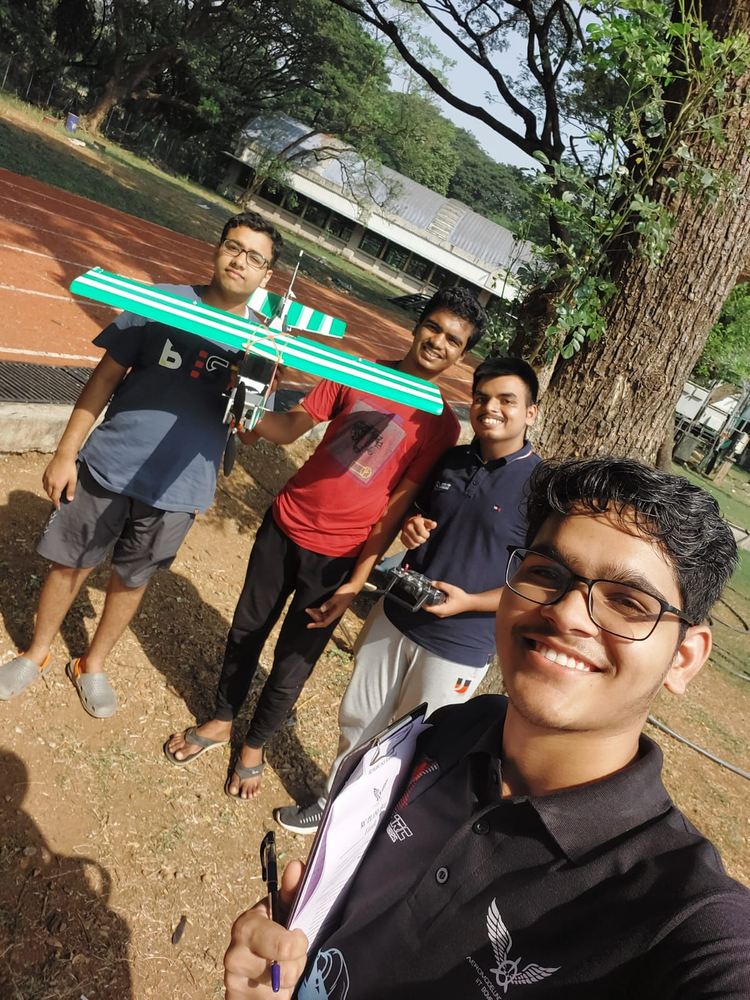

RC-PLane

This was my second project at the institute. As a team, we aimed at building a plane to fly high .To our delight, the plane successfully took off, but unfortunately, it didn't maintain flight for as long as we had hoped; it descended after a few seconds. Nonetheless, we learned a lot from this experience